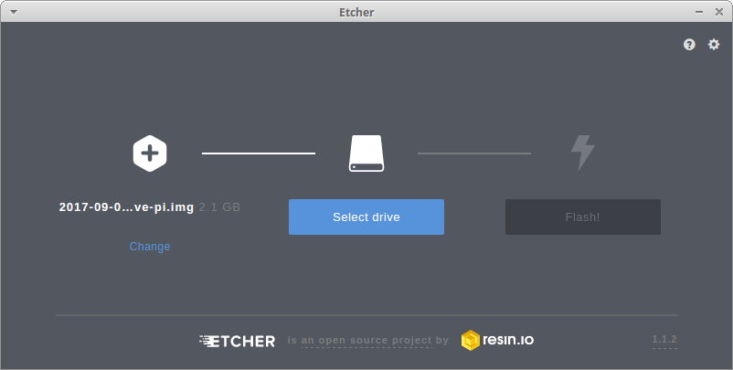
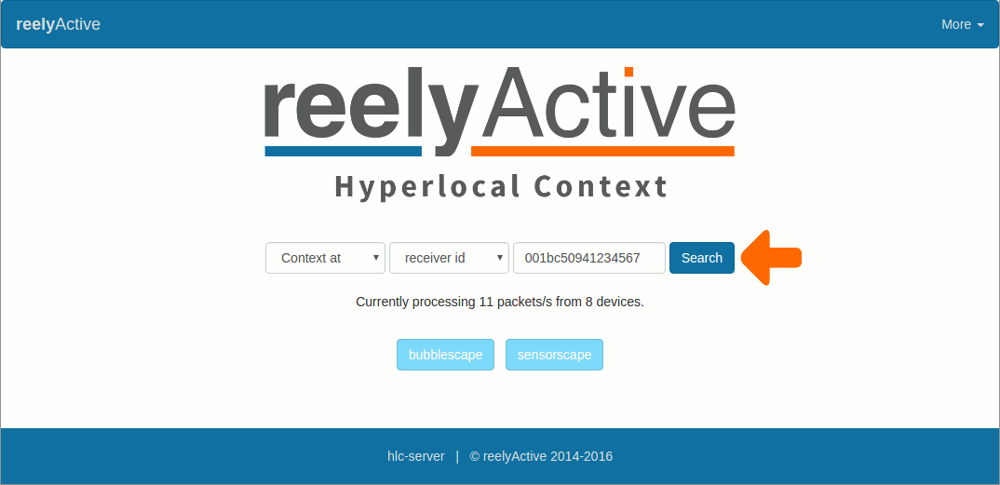

Make a Raspberry Pi hub
The Raspberry Pi 3 is the first in its family to natively support Bluetooth. Since at reelyActive we're passionate about the endless possibilities of detecting "advertising" Bluetooth Low Energy (BLE) devices, we were excited to make the Pi 3 into a sniffer using our open source code. In this tutorial we'll take you step-by-step through building a reliable, standalone BLE sniffer from a virgin Pi 3.

As presented on Hackaday
At the Eleventh HOPE conference, we showed off a standalone Raspberry Pi 3 Bluetooth Low Energy (BLE) sniffer to the Hackaday crew, which they found cool enough to share with their readers.
You'll find instructions below to replicate the setup and more, making use of the integrated BLE radio. Just add power and network and you have yourself a versatile sub-$100 tool/toy!
Read the Hackaday Post Hears Here's what you'll get
Access any of these pages by browsing to the Pi
Dashboard
Infrastructure APIs
Contextual APIs
The bubblescape
You'll also have access to REST APIs and a real-time data stream over websockets.
Hardware Prerequisites
You'll need a Raspberry Pi 3 (or equivalent) with native Bluetooth capability in order to make a standalone sniffer.
If you have a non-Bluetooth Pi, do not despair! You can connect a purpose-built reelyActive starter kit to your Pi via USB for even-better sniffage!

Both items can be purchased by following the links below. If you prefer to get your hands dirty with the reelyActive kit, you can also Build your own USB Hub and purchase the reelceiver.
Preparing the Pi
Does your Pi already have an operating system (Raspbian/NOOBS) installed and is connected to the Internet?
Choose from one of the three options below:
Setup your SD card from a disk image that already has Stretch Lite, Node.js and our software installed. This is the same setup as in the From Scratch option, except we did most of the work for you so that you can skip ahead for instant gratification!
SD Card
Download our compressed disk image which is pre-configured as follows.
| Parameter | Value |
|---|---|
| Disk Image Version | 2017-09-04-reelyactive-pi |
| Raspbian Version | Stretch Lite (2017-08-16) |
| Node.js Version | 6.11.2 |
| Pre-installed software | pi-suite, generable, offline-demo |
| Pre-configured WiFi | SSID: reelyActive, password: owl-in-one |
| Pre-configured Ethernet | DHCP client with fallback to DHCP server, IP: 10.0.50.100 |
| Hostname | reelyActive-pi |
| SSH | Enabled. Username: pi, password: berryinsecure. |
| Serial | Hardware enabled. Login disabled. |
| I2C | Enabled |
Unzip 2017-09-04-reelyactive-pi.tar.xz to obtain the 2.1GB disk image: 2017-09-04-reelyactive-pi.img
Transfer the image to an SD card of at least 4GB. There's finally a friendly, cross-platform way to do this using Etcher:
First Connection
Complete the following in order:
- insert the SD card in the Pi
- connect the Pi to your PC via a network cable
- apply power to the Pi
- wait about one minute for the Pi to boot
From the command line, ssh into the Pi as follows:
ssh pi@10.0.50.100
The default password will be berryinsecure. You're now connected to the Pi.
raspi-config
Configure the Pi by running the following from the command line:
sudo raspi-config
From the text-based menu, complete the following:
- Select the option to Change User Password. Choose a password that cannot be easily guessed, but is nonetheless straightforward to enter from the command line next time you'll ssh in.
- Select the option to Expand Filesystem under Advanced Options. This will ensure that all of the available space on the SD card is available.
Select Finish, then select Yes when asked to reboot.
SSH back into the Pi once the reboot is complete (using the new password). The Pi is ready! Skip ahead to Start Sniffing!
This is the same setup as in the Quickest option, only starting from scratch using the latest Stretch Lite image and the most recent versions of Node.js and our software.
SD Card
Download the latest Raspbian Stretch Lite image from www.raspberrypi.org/downloads/raspbian/.
Transfer the image to an SD card of at least 4GB. There's finally a friendly, cross-platform way to do this using Etcher:
Basic settings
Enable SSH (it is disabled by default) by browsing to the root of the /boot folder of the SD card and running from the command line:
sudo touch ./ssh
Disable consistent network device naming (introduced in Stretch) by editing the cmdline.txt file in the same /boot folder:
sudo nano /boot/cmdline.txt
Paste the following to the end of the first line of the file and save:
net.ifnames=0
Enable Ethernet static fallback so that you can directly connect the Pi to your PC and SSH in to a known IP address. Browse to the root of the / folder of the SD card and, from the command line open the dhcpcd.conf file for editing:
sudo nano /etc/dhcpcd.conf
Paste the following lines at the bottom of the file and save:
# Define static profile
profile static_eth0
static ip_address=10.0.50.100/24
static routers=10.0.50.1
static domain_name_servers=10.0.50.1
# Fallback to static profile on eth0
interface eth0
fallback static_eth0
This will configure the Pi to use IP address 10.0.50.100 when it is connected to Ethernet without DHCP.
First Connection
Complete the following in order:
- insert the SD card in the Pi
- connect the Pi to your PC via a network cable
- apply power to the Pi
- configure your PC's Ethernet adapter to use an address in the same subnet as the Pi (ex: 10.0.50.101)
From the command line, ssh into the Pi as follows:
ssh pi@10.0.50.100
The default password will be raspberry. You're now connected to the Pi.
dnsmasq
Configure the Pi to act as a DHCP server on the Ethernet port when no external DHCP server is available. From the command line, run the following:
sudo apt-get install dnsmasq
sudo mv /etc/dnsmasq.conf /etc/dnsmasq.default
This will install the dnsmasq software. Configure the DHCP server by creating and editing the new dnsmasq.conf file:
sudo nano /etc/dnsmasq.conf
Paste in the following lines and save:
interface=eth0
dhcp-range=10.0.50.2,10.0.50.99,255.255.255.0,12h
This will configure the Ethernet interface to serve IP addresses in the range from 10.0.50.2-99 using DHCP, with a 12-hour lease. Restart the service from the command line for changes to take effect:
sudo service dnsmasq restart
raspi-config
Configure the Pi by running the following from the command line:
sudo raspi-config
From the text-based menu, complete the following:
- Select the option to Change User Password. Choose a password that cannot be easily guessed, but is nonetheless straightforward to enter from the command line next time you'll ssh in.
- Select the option to Expand Filesystem under Advanced Options. This will ensure that all of the available space on the SD card is available.
- Select the option for Serial under Interfacing Options. Select No to a login shell being accessible over serial. Select Yes to enable the serial port hardware.
- Select the option for I2C under Interfacing Options. Select Yes to enable the ARM I2C interface.
Select Finish, then select Yes when asked to reboot.
SSH back into the Pi once the reboot is complete (using the new password). The Pi is ready!
Take this beginner-friendly route if you intend to run your Pi as a multi-purpose computer with mouse and keyboard attached. Otherwise we highly recommend the other options which are optimised for performance.
SD Card
The Pi's filesystem resides on an SD card. If your Pi came with a prepared SD card, lucky you, you get to skip this step!
The Quick Start Guide suggests an 8GB class 4 SD card, which we encourage you to purchase from an established vendor. If the card doesn't come formatted as FAT32, you'll need to do so (read the INSTRUCTIONS-README.txt included in the NOOBS ZIP file).
Download NOOBS and unzip the contents to the root folder of the SD card. You're all set!
Initial Boot
Connect the following to your Pi:
- the prepared SD card in its slot
- a USB keyboard in one of the USB ports
- a USB mouse in another USB port
- a monitor via the HDMI port
Then power the Pi through a high-quality USB power source (ex: phone charger). Follow the instructions on screen to install the Raspbian operating system. This procedure will take some time. Perhaps enjoy a slice or two of delicious raspberry pie while you wait?
Connect to Network
After Raspbian boots, connect the Pi to the Internet via either WiFi or Ethernet using the on-screen tools. The Pi is ready!
Update packages
It is good practice to ensure that the software on the Pi is up to date before proceeding with any software installation. From the command line on the Pi, execute the following in order:
sudo apt-get update
sudo apt-get upgrade
Install Node.js and forever
Do you have Node.js and forever installed?
Yes No UnsureYou're all set!
Proceed to install pi-suite
Install Node.js
Raspbian will likely include an old version of Node.js. Here we'll provide the instructions for installing the latest LTS (long term support version) which will be required. The following table suggests known working versions for different variants of the Pi
| Raspberry Pi 3 | node-v6.11.2-linux-armv7l | URL |
|---|---|---|
| Raspberry Pi Zero (W) | node-v4.8.2-linux-armv6l | URL |
From the command line on the Pi, execute the following in order, substituting the URL and Node version as per the table above:
cd ~/Downloads
wget https://nodejs.org/dist/v6.11.2/node-v6.11.2-linux-armv7l.tar.xz
tar -xf node-v6.11.2-linux-armv7l.tar.xz
sudo mv node-v6.11.2-linux-armv7l /usr/local/node
cd /usr/local/bin
sudo ln -s /usr/local/node/bin/node node
sudo ln -s /usr/local/node/bin/npm npm
Confirm that v6.11.2 (or the version you installed) appears when you run node --version. Node.js is now installed.
Install forever
cd /usr/local/bin
sudo npm install forever -g
sudo ln -s /usr/local/node/bin/forever forever
Verify if you have Node.js installed
Node.js is a JavaScript runtime which runs libraries (such as our own) from the largest ecosystem of open source libraries in the world. The forever package is one of these libraries, and it will keep our programs running forever, even if they crash.
Open a terminal or command prompt, type node --version and press Enter.

If the output is something like vx.x.x, you do indeed have Node.js installed. Repeat the test with forever --version. If both are installed, click Yes above. Otherwise click No above.
Install pi-suite
The pi-suite is a collection of reelyActive open source software which allows your Pi to:
- listen for BLE devices by itself (Raspberry Pi 3+)
- listen for BLE devices via a reelyActive starter kit
- interpret the packets of these BLE devices
- host webpages displaying the interpreted data
- display these webpages via HDMI
- forward the live data stream to a remote server
If you're running the Lite version of Raspian Stretch or Jessie, you'll first need to install git by running sudo apt-get install git-core from the command line.
From the command line on the Pi, execute the following in order:
mkdir ~/reelyActive
cd ~/reelyActive
git clone https://github.com/reelyactive/pi-suite.git
cd pi-suite
npm install
Start Sniffing!
Choose your configuration below and get up and running in an instant.
Run pi-suite
From the command line on the Pi, where you should still be in the ~/reelyActive/pi-suite folder, execute the following:
sudo node pi-suite
The console output should include a line that says Browse to your Pi at http://xxx.xxx.xxx.xxx with the IP address of your Pi in place of the x values. Copy the link and open it in your browser.
Become a bubble!
The bubblescape is a visualisation of all the BLE devices sniffed by your Pi. Fancy yourself as a bubble? Install reelyApp on your Android or iOS device to experience the following:
Once you've finished your initial exploration of the various webpages displaying the live data, press Ctrl-C to terminate the execution of pi-suite before proceeding with the next steps.
What's a Reel-Pi HAT?
A HAT is Hardware Attached on Top. We've created, as open hardware, a HAT which connects to the Pi header and provides a direct interface to our reel, allowing you to daisy-chain our reelceivers.
Enable serial port hardware
The Reel-Pi HAT communicates using the Pi's hardware serial port, which is disabled by default, but can easily be enabled with raspi-config. From the command line on the Pi, run sudo raspi-config and then configure as follows:
- Select Interfacing Options — Serial
- Select No to disable the login shell over serial
- Select Yes to enable the serial port hardware
- Accept to reboot the Pi
Run pi-suite-reel
From the command line on the Pi, where you should still be in the ~/reelyActive/pi-suite folder, execute the following:
sudo node pi-suite-reel
The console output should include a line that says Browse to your Pi at http://xxx.xxx.xxx.xxx with the IP address of your Pi in place of the x values. Copy the link and open it in your browser.
Become a bubble!
The bubblescape is a visualisation of all the BLE devices sniffed by your Pi. Fancy yourself as a bubble? Install reelyApp on your Android or iOS device to experience the following:
Once you've finished your initial exploration of the various webpages displaying the live data, press Ctrl-C to terminate the execution of pi-suite before proceeding with the next steps.
Connect your starter kit
Connect your starter kit to any free USB port on the Pi taking care to respect the reelceiver directionality, as shown in the video.
Run pi-suite-pareto
From the command line on the Pi, where you should still be in the ~/reelyActive/pi-suite folder, execute the following:
sudo node pi-suite-pareto
View the data in Pareto
Browse to pareto.reelyactive.com and log in with the credentials provided when you purchased the starter kit.
View the data on your Pi
The console output should include a line that says Browse to your Pi at http://xxx.xxx.xxx.xxx with the IP address of your Pi in place of the x values. Copy the link and open it in your browser.
Become a bubble!
The bubblescape is a visualisation of all the BLE devices sniffed by your Pi. Fancy yourself as a bubble? Install reelyApp on your Android or iOS device to experience the following:
Once you've finished your initial exploration of the various webpages displaying the live data, press Ctrl-C to terminate the execution of pi-suite-pareto before proceeding with the next steps.
Unfortunately that means you have no Bluetooth Low Energy radio on which to listen, as indicated in the Hardware Prerequisites section. May we suggest you purchase a starter kit?
Configure run-on-boot with kiosk display
Would you like to do this?
Yes No UnsureInstall kiosk display packages
In order for the Pi to display a webpage in kiosk mode, we'll need the iceweasel browser (which handles JavaScript much better than the default Epiphany browser) and a window manager. From the command line, execute the following:
sudo apt install iceweasel
sudo apt-get install matchbox-window-manager xautomation unclutter
Install Xorg (special case)
This step applies only if your Pi is running the Lite version of Raspbian Stretch or Jessie which doesn't have a GUI pre-installed. If you're already able to boot into a friendly desktop environment, skip this step . From the command line, execute the following:
sudo apt-get install --no-install-recommends xserver-xorg
sudo apt-get install --no-install-recommends xinit
sudo apt-get install --no-install-recommends x11-xserver-utils
Configure run-on-boot
Here we'll specify what programs to run on boot via the rc.local file. From the command line, open the file for editing with the command sudo nano /etc/rc.local and paste the following three lines above the exit 0 line:
sudo forever start /home/pi/reelyActive/pi-suite/pi-suite.js
sleep 30; sudo xinit /home/pi/reelyActive/pi-suite/display-iceweasel &
sleep 30; xte "key F11" -x:0
Press Ctrl-X to save and exit the editor. Note that if you're using the Pi as a hub for a reelyActive starter kit that should forward the real-time data to Pareto, you'll need to change the first line to instead run pi-suite-pareto.js.
Configure console autologin
Now that the Pi is configured to run-on-boot with a kiosk display, there's no reason for it to load the desktop and waste valuable computing and memory resources. Instead we'll configure the Pi to boot to the console and log in automatically. From the command line, run sudo raspi-config and from the Boot Options menu, select Console Autologin (which may be under a Desktop/CLI sub-menu).
Reboot
Reboot the Pi with the command sudo reboot now or with a power cycle. Confirm that after a minute or so you can browse to the Pi and observe the webpage decoding BLE devices. Also confirm that the webpage is projected on an HDMI-connected monitor (connect the monitor before the reboot so that the resolution can be detected).
You can always do it later if you like!
Check out the other optional features below.
It's up to you!
This final OPTIONAL step configures the Pi to run pi-suite automatically on boot, as well as display its webpage on any monitor via the HDMI port.
If that's what you'd like to do, click Yes above.
Optional features
Consider implementing the following optional features.
The Pi can easily be pre-configured to connect to multiple WiFi networks. This feature is useful if the Pi is moved to different locations, each with their own WiFi credentials. To pre-configure WiFi credentials, from the command line, open the wpa_supplicant.conf file for editing with the command sudo nano /etc/wpa_supplicant/wpa_supplicant.conf and paste the following block of code, once for each network, at the bottom of the file.
network={
ssid="ENTER_SSID_HERE"
psk="ENTER_PASSWORD_HERE"
key_mgmt=WPA-PSK
}
Don't forget to enter the SSID and password for each network with much care! Although networks commonly use a pre-shared key (PSK) for authentication, as specified in the example above, it may be necessary to tweak the settings as discussed in details here.
Ethernet fallback ensures that you can always directly connect to your Pi at a known static IP. The Pi will assume the static IP on its Ethernet port in the absence of a DHCP server. To enable Ethernet fallback, from the command line, open the dhcpcd.conf file for editing with the command sudo nano /etc/dhcpcd.conf and paste the following lines of code at the bottom of the file.
# Define static profile
profile static_eth0
static ip_address=10.0.50.100/24
static routers=10.0.50.1
static domain_name_servers=10.0.50.1
# Fallback to static profile on eth0
interface eth0
fallback static_eth0
When all else fails, to log on to the Pi, directly connect your computer to the Pi via Ethernet, set your computer's IP address to 10.0.50.101, and ssh pi@10.0.50.100
Scheduled reboots ensure that the Pi will eventually recover from any soft failure. To force daily reboots via a cron job, from the command line, open the crontab file for editing with the command sudo nano /etc/crontab and paste the following line of code above the closing #.
0 5 * * * root reboot
The 5 signifies 5am. Adjust this and the other parameters as your application requires.
Enable additional features such as data logging by editing pi-suite.js with the command nano ~/reelyActive/pi-suite/pi-suite.js or pi-suite-pareto.js with the command nano ~/reelyActive/pi-suite/pi-suite-pareto.js.
Simply comment or uncomment the desired options by adding or removing two backslashes at the start of each concerned line. Press Ctrl-X to save the file and exit.
Prefer Software-as-a-Service?

Our Pareto platform combines even more features and functionality with the convenience of SaaS. You can even use your Raspberry Pi as a gateway.
What's next?
Create a beautiful dashboard to display on your kiosk screen! Follow our Build web apps with beaver.js tutorial to tap into the live socket.io data feed from our open source software running on the Pi.
Convert your Pi into the heart of a generative art station with our GeneraBLE project!
Connect your BLE-sniffing Pi to openHAB by following this thread.
If you build your own unique hub and would like to share your project, please get in touch!
Build web apps with beaver.js Make generative art Return to diyActive